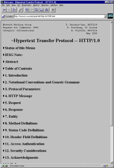
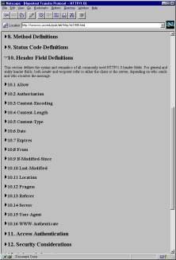
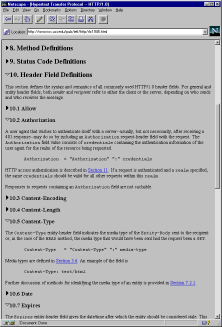
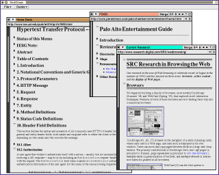
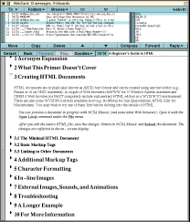

Systems Research Center
130 Lytton Avenue
Palo Alto, CA 94301
http://www.research.digital.com/SRC/

Systems Research Center
130 Lytton Avenue
Palo Alto, CA 94301
http://www.research.digital.com/SRC/
This paper describes an outline processor display of Web pages. We attach icons, called zippers, to the HTML heading tags (H1, H2, ...), and the user can dynamically include or elide the body of each section by clicking on the zipper. We have implemented zippers in three different ways: zippers that are inserted by a custom-built Web browser and that control the browser's display engine; zippers that are inserted into the HTML document by a Web proxy and that use the proxy to generate modified HTML reflecting the changed state of the zipper; and zippers that trigger a JavaScript program which redisplays an appropriately modified version of the page.
A good way to experience the ideas presented here is to view the outline version of this paper. You will need to use Netscape Navigator 3 or higher.
As people rush to put information onto the World Wide Web, more and more structured documents are appearing. These documents include home pages with lots of hierarchically organized links, papers with many sections and subsections, and other lengthy documents such as books and manuals.
All Web browsers that we know of display each page as a continuous scroll. Unfortunately, it is easy to lose context when viewing a snippet of the whole, and it is hard to jump to arbitrary places in the page. These problems become more severe with longer pages.
Outline processors provide one well known technique for addressing these problems. Outline processors allow a user to expand and contract selected sections and subsections of a document, thus retaining the high-level structure of the document while also displaying individual sections. In addition, outline processors allow the user to rapidly jump within the document.
This paper describes how we have integrated outline processor technology into Web browsers. We use the heading tags (i.e., H1, H2, ..., H6) in the HTML source to derive an outline structure of the document, and we mark each heading with an icon called a zipper. Clicking on the zipper causes the section introduced by the heading to expand and contract. Re-expanding a section causes the state of all subsections to reappear as they were before the section was contracted.
The three screen dumps below show different states of a session in which we viewed the HTTP 1.0 specification. The well-structured hierarchy of this document makes it ideal for outline viewing. The left screen dump shows the document with the top-level zipper expanded ("open") and all second-level zippers contracted ("closed"). In the middle screen dump, the user has opened the zipper of section 10; and in the screen dump on the right, he has further opened subsections 10.2, 10.5, and 10.7.
|  |  |  |
The rest of this paper is organized as follows: The next three sections describe three alternative implementations of zippers:
Following that, we discuss related work. Finally, we offer some concluding thoughts on the merits of zippers and on the general applicability of the various implementation alternatives we explored.
We have built a family of Web browsers that support zippers. These browsers are implemented in Modula-3, an object-oriented language akin to Java. Modula-3 comes with a sophisticated UI toolkit, called Trestle [5].
In Trestle, each window is organized as a tree of widgets, called "virtual bitmap terminals," or VBTs. VBTs can be classified by the number of their children. Leaf VBTs have no children; they are used for displaying text and images, for scrollbars, for type-in fields, and so on. Filter VBTs have a single child and modify it in some way, such as by adding a border, by making it reactive to mouse clicks, and so on. Finally, split VBTs have an arbitrary number of children, and typically arrange their children spatially or temporally. For example, a horizontal box arranges its children horizontally, a vertical box arranges them vertically, a pack split arranges them like words in a paragraph, and a temporal split displays one child at a time.
New VBTs are often created by combining existing VBTs. The heart of our Web browsers is a VBT for fetching and displaying a URL. Individual words are displayed through text VBTs, images through image VBTs, and white space and horizontal rules through texture VBTs. The basic elements of HTML forms are implemented using the corresponding VBTs, e.g., type-in fields, buttons, check boxes, and radios. These leaf VBTs are combined into paragraphs using a pack split, and the paragraphs are arranged into pages by vertical boxes.
Below is the interface of the WebVBT class. For the sake of simplicity, we do not show the methods related to image maps, index pages, and forms. We also don't show the methods for fine tuning display attributes such as fonts and colors.
INTERFACE WebVBT;
IMPORT VBT;
TYPE
T = VBT.T OBJECT
page: Page := NIL;
METHODS
init (): T;
fetch (url: TEXT);
stop ();
ready (n: CARDINAL);
hotlink (link: TEXT; cd: VBT.MouseRec);
END;
Page <: ROOT;
PlainPage = Page OBJECT ... END;
ImagePage = Page OBJECT ... END;
HTMLPage = Page OBJECT
METHODS
getBase(): TEXT;
getTitle(): TEXT;
...
END;
END WebVBT.
The init method initializes the WebVBT and leaves it blank. The fetch method (eventually) displays the contents of the url parameter. More precisely, it cancels any fetching in progress, forks a thread to actually retrieve the contents of the URL, and then returns. The stop method is used to cancel any ongoing fetches.
The ready method will be called by an ongoing fetch operation when the page (but not necessarily all of its images or applets) has been retrieved. At this point, the page field has been set to an object that is specific to the MIME type of the document. Fetching continues until all of the images and applets have been loaded, and the ready method is called each time that an image or applet is loaded, with the n parameter updated to indicate the number of images and applets still to be loaded. The default ready method does nothing; client applications using WebVBT may override this method.
The hotlink method is called each time the user clicks on a hyperlink in the displayed Web page. The default method does nothing; the typical WebVBT client overrides it to fetch the target of the hyperlink, specified by the link parameter.
The following is a fully-functional Web browser; it starts out at the Alta Vista home page:
MODULE Main;
IMPORT Trestle, VBT, Web, WebVBT;
PROCEDURE HotLink(self: WebVBT.T; link: TEXT; cd: VBT.MouseRec) =
VAR page: WebVBT.HTMLPage := self.page;
BEGIN
self.fetch(Web.AbsoluteURL(page.getBase(), link);
END HotLink;
VAR v := NEW(WebVBT.T, hotlink := HotLink).init();
BEGIN
v.fetch("http://www.altavista.digital.com/");
Trestle.Install(v);
Trestle.AwaitDelete(v);
END Main.
The ease with which new VBTs can be composed from existing ones makes it very easy to implement zippers. In particular, zippers make use of two types of VBTs: a button (with one of two images, to indicate the expanded or contracted state) and a temporal split (to show either a heading alone or a heading and its body).
The WebVBT walks the internal representation of the parsed HTML, looking for heading tags (H1, H2, ...). Each time it finds a tag, a new temporal split is created. The temporal split has two children. One child is the zipper button in the closed state along with the heading text. The other child is a vertical box containing the zipper button in the open state along with the heading text, followed by the body of the section and all its subsections.
Clicking on a zipper button toggles which child of the temporal split is displayed. Shift-clicking on a zipper button toggles the heading and visits all subheadings, setting the state of their zippers to match that of the clicked zipper.
The screen dumps below show DeckScape [3] (left) and WebCard [2] (right), browsers we have built on top of WebVBT.
|  |  |
DeckScape and WebCard are part of the SRC Modula-3 distribution, which is available in source form at http://www.research.digital.com/SRC/modula-3/html/srcm3.html.
The main drawback of the approach described in the previous section is that it limits users to our custom Web browser. Custom browsers are problematic because of the rapid evolution of HTML and the resources required to match the feature set of the two industry-leading browsers.
An alternative approach for implementing outline views of Web pages is to build a Web proxy that dynamically changes the HTML of retrieved pages, and services requests by the user to expand or contract parts of the outline view. We have implemented such a "zipper proxy," intended to be run on the same machine as the Web browser. Users can configure their standard Web browser to hand all HTTP requests to the zipper proxy.
Conceptually, the zipper proxy maintains a table that reflects the outline state of all documents retrieved so far. Each retrieved document is assigned a unique "document number". A table entry consists of the document's URL, its number, and an array of boolean values (called the "state vector"). The length of the array corresponds to the number of potential zippers, i.e. the number of heading tags in the document, and each entry reflects the state of one zipper.
When the browser requests a document for the first time, the proxy retrieves the document from the appropriate Web server, and parses the HTTP header to determine the document's MIME type. If the document is not of type "text/html", it is immediately forwarded to the browser. Otherwise, the proxy parses the HTML to determine the number of heading tags, creates a state vector with one entry per heading, initializes it such that all zippers are closed, and adds an entry consisting of the document's URL, its number, and the state vector to the table. Furthermore, the proxy uses the document's original HTML and the state vector to generate a modified version of the document, which is then returned to the browser.
The way in which the proxy modifies a document's HTML is key to understanding the zipper proxy technique. First, the proxy inserts an Expires:0 field into the HTTP header, replacing any existing Expires: field. The 0 value indicates that the document expires immediately and should therefore not be cached by the Web browser. The proxy then scans over the HTML of the original document, until it encounters a heading tag.
Assume the zipper proxy runs on machine "ash", is processing document number 5 (whose URL is http://www.carroll.com/poems.html), and just encountered the third heading:
<H2>The Walrus and the Carpenter</H2>
If the state vector indicates that the zipper corresponding to this heading is open, the proxy replaces the heading with the following HTML code:
<H2>
<A HREF="http://ash/zip&5&3"><IMG BORDER=0 SRC="http://ash/open.xbm"></A>
The Walrus and the Carpenter
</H2>
The URL http://ash/open.xbm refers to the image of an open zipper, available from the zipper proxy. After replacing the original with the modified heading, the proxy continues to scan for headings.
If the state vector indicates that the zipper is closed, the proxy replaces the heading in a similar fashion, but uses the image of a closed zipper instead. Furthermore, it will omit all the HTML between this heading and the next H1 or H2 heading from the modified document.
The net result of this rewriting process is that the user is presented with a outline view of the document. Headings that are not elided are preceded by zipper icons. The zippers are enclosed into HTML anchors; clicking on a zipper sends an HTTP request to the zipper proxy. Encoded in this request is the number of the document and of the zipper that is to be toggled. The zipper proxy uses those two numbers to update the document's state vector accordingly, and then generates a new modified version of the document, based on the original HTML and the updated state vector.
If the proxy were to simply return the modified HTML, the browser would display the updated document, but show the wrong URL (e.g. a URL of the form http://ash/zip&5&3 instead of http://www.carroll.com/poems.html). The proxy avoids this problem by returning a "moved temporarily" status code instead:
HTTP/1.0 302 ok
Location: http://www.carroll.com/poems.html
This causes the Web browser (transparently to the user) to emit a second HTTP request, this time for the document at URL http://www.carroll.com/poems.html. This request is then intercepted by the proxy, which now returns the modified HTML, thus causing the browser to display the updated document and associating it with the correct URL.
As a performance optimization, our zipper proxy implementation caches n documents, where n is adjustable by the user. The cache eviction strategy is least-recently used. We cache only documents of MIME type "text/html", for three reasons: First, only HTML documents can contain zippers, and these documents are more likely to be requested multiple times, since every zipper toggling generates an HTML request for the document. Second, zipper toggling has to be an instantaneous operation in order to improve the quality of the user's Web browsing experience. Third, we assume that documents whose MIME type is not "text/html" will typically be cached by the Web browser, making it unnecessary for the proxy to duplicate this caching. After introducing caching and streamlining the code, we found the human-perceivable performance of the zipper proxy to be indistinguishable from that of the custom Web browser described in the previous section.
The zipper proxy is reconfigured by visiting a Web page served by the proxy that contains a form for adjusting various parameters: the proxy's port; the IP address and port of an outer proxy (such as the gateway of a corporate firewall); IP addresses that can be accessed directly, without going through the outer proxy; the number of parallel threads for servicing requests; the maximum number of state vectors retained; the maximum number of cached documents; and whether newly retrieved documents are zipped up by default or not. The form also provides a button that allows the user to save those settings to disk. Our proxy also provides a control window that allows users to switch zipping on and off on a per-document basis. However, this feature requires a recent version of JavaScript.
The screen dump below shows a Windows 95 desktop with three Netscape Navigator windows. The leftmost window shows a zipped view of the World Wide Web Consortium's HTTP overview page, the window to its right shows the zipper proxy configuration page, and the small window at the far right shows the zipper proxy control window.
Our zipper proxy is available in binary form for Intel/Windows 95 and for Alpha/Digital Unix platforms at http://www.research.digital.com/SRC/webbrowsing/zipperproxy. The current version does not preserve the scroll position of a page when a zipper is clicked. This problem could be remedied by attaching anchor names to each zipper. Now, when the proxy receives an HTTP request because a zipper was clicked, it can add the name of the zipper to the Location field in the "302" reply. Still, this "trick" does not completely solve the problem: the clicked zipper will move to the top of the page, causing visual discontinuity. In contrast, our custom Web browser has no such visual discontinuity.
The incorporation of scripting languages such as JavaScript and VBScript into Web browsers provides an easy way to enhance a Web page. Scripting code is embedded into Web pages, and the script is executed while the HTML is parsed by the browser. The typical use for scripts is to generate HTML on-the-fly and to associate code with HTML form elements on the page. Some scripting languages, and JavaScript in particular, are powerful enough to implement zippers. This script-based implementation differs from the proxy-based approach in that toggling zippers does not require communication with a server or a proxy; all computation takes place in a script running inside the browser. The rest of this section describes a zipper implementation in JavaScript.
Our script-driven implementation of zippers is based on three observations. First, an HTML page can be rewritten as a JavaScript program that generates the HTML as the script is executed. Second, the contents of a Web page can be modified by redisplaying the current page (thus re-executing the script) and varying the output of the script. Third, persistent client state can be used to keep track of the state of the zippers. We now elaborate on these observations.
We can rewrite the following HTML:
<HTML>
<H1>My Home page</H1>
Welcome to my home page ...
</HTML>
as the JavaScript program:
<SCRIPT LANGUAGE="JavaScript">
function Emit(t) { document.write(t); }
Emit("<HTML>\n");
Emit("<H1>My Home page</H1>\n");
Emit("Welcome to my home page ...\n");
Emit("</HTML>\n");
</SCRIPT>
As the script is executed by the browser, it generates the original HTML one line at a time.
Multiple, slightly different versions of a page can be obtained by changing the Emit function such that it generates HTML only if a condition is met (which depends on the state of the zipper):
function Emit(t)
{ if (some_condition) document.write(t); }
To keep track of headings in HTML, we introduce a second function, similar to Emit, but taking the heading level as an additional argument. The purpose of this function is to put appropriate headings into the document:
function Heading(level, t)
{ if (...some_condition...) ... document.write(t); ... }
Here some_condition and the elided code refer to JavaScript that detects if, at the current position and state vector of the document, the emitted text and headings should be visible or not. Essentially, we need to keep track of the fact that when a zipper is closed, all text up to the following heading of the same or a higher level is contracted and thus not emitted. This is solved using counters to keep track of the current level and which levels are currently visible.
The outcome of some_condition varies as the user opens or closes zippers. We associate this toggling code with inline images of zipper icons that reflect the state of the zipper. The code has the function of changing the state vector and then instructing the browser to redisplay the current page:
function Toggle(headingno) {
if (State(headingno)==1) then SetState(headingno, 0);
else SetState(headingno, 1);
history.go(0);
}
As before, heading numbers are assigned sequentially for each heading in the document. In this implementation, the state of the zipper is equal to 1 when open and equal to 0 when closed. The Heading function will emit HTML of the following general form (in this particular case, to close zipper number 5):
<H2>
<A HREF="JavaScript: Toggle(5);"><IMG SRC="Open.gif"></A>
Heading Text
</H2>
The heading, inline image and invocation of the toggle function (the lines above) are emitted by several JavaScript functions, as the zipper number to toggle varies according to the heading number, and the inline image is dependent on the state of the zipper.
Modifying the current contents of a page is done by forcing the browser to redisplay all of the currently visible page. This is done by calling history.go(0), which fetches the top page in the history stack.
Although redisplaying the complete page is inefficient, it seldom turns out to be a problem, because the page is already located in the browser's cache.
The only remaining problem is how to keep track of the state of the zippers. "Cookies" are a way to associate persistent client state with a specific document, and JavaScript allows us to inspect and to modify the document's cookie. We use cookies to save the zipper state of each document as a bit vector.
The rewriting of the original HTML source into JavaScript can be controlled by the content provider or by the user.
Content providers can choose to instrument their Web server to transform documents dynamically as they are requested. The most portable mechanism to achieve this is the Common Gateway Interface (CGI). In addition, there are vendor-specific ways to dynamically transform documents, such as Netscape server plug-ins and Microsoft ISAPI filters.
The content provider can also transform documents in an offline fashion, and offer the transformed document through a standard Web server. We have implemented a batch converter for Windows 95; it can be downloaded at http://www.research.digital.com/SRC/webbrowsing/zippo. (The zipped version of this paper was prepared in this way.)
When rewriting is done by the content provider, the user does not need to take any action to see the zipper-enhanced version of the document. On the other hand, he can see the document in its original form only if the content provider chooses to make it available. Thus, the user has maximum convenience and transparency, but no control.
Alternatively, the user can be in control of the document transformation. The prototypical mechanism for doing so is through a local proxy. This approach gives the user the freedom to decide which pages should be zipped up, at the cost of convenience (appropriate infrastructure must be installed).
Finally, the user could visit a "zipping service" Web site, enter an arbitrary URL into a form, and get in return a zipped version of the URL. This scenario is both convenient (there is no software to install) and places the user in control, but it is not transparent because the returned document shows the URL of the zipping service rather than that of the requested page. Also, this approach is tedious since it requires the user to type a URL.
Zippers work well on Web pages that use heading tags to indicate the logical structure of the page. Unfortunately, many authors use heading tags to produce particular formatting effects, such as font and point size changes, rather than to indicate logical structure. On such pages, users can simply turn off the zippers and the page is displayed conventionally.
We know of one Web site that has hand-coded zippers [7]. The drawback of hand coding zippers is that it requires server interaction to expand or contract, and an exponential number of files to capture all states.
Authors of long pages frequently add a table of contents to the top of the page, with entries in the table linking to the various sections. Sometimes, each section appears on its own page, with "next," "previous," "up," and "top" links on each page. Unfortunately, it is easy for the viewer to lose the big picture because the table of contents is not visible while looking at the contents of a particular section.
An alternative to zippers for retaining the big picture while viewing the details is a multi-panel display, such as in SuperBook [1]. One panel displays the table of contents and the other panel displays sections in the document. Clicking on an entry in the table of contents causes the other panel to display the corresponding part of the document. The user can also open and close levels of the table of contents, but the body of a section is always displayed in the second panel. A multi-panel display such as SuperBook could be implemented using frames, by adding appropriate HTML markups and scripting code to a source document.
Another related system is SoftQuad's Panorama Pro [6], which displays SGML documents using a two-panel viewer similar to that of SuperBook. Panorama Pro is also loosely integrated with the Web: The application can be configured as an external viewer of documents whose MIME type is SGML. Clicking on a URL in a document displayed by Panorama Pro will cause Netscape (or some other user-specified browser) to fetch and display the URL. Electronic Book Technologies' DynaText [4] is another impressive SGML viewer; it is integrated into Netscape as a plug-in. It's important to realize, however, that Panorama Pro and DynaText are not Web browsers.
Viewing a Web page using zippers makes it possible to see details of parts of the page while maintaining the global context of the entire page. The larger the Web page - or the smaller the vertical space available for the display - the more benefit there is to this technique.
Using the heading tags to infer a document's outline structure has two limitations: First, as mentioned, content providers in practice often do not use heading tags to indicate the logical structure of a document. Second, content providers have no flexibility in the granularity of the material being elided. Both of these limitations could be addressed by adding a zipper tag to HTML. One possibility would be to parallel the DL, DT, and DD tags: the ZL tag would introduce a series of zippers; the ZT tag would be the heading of a zipper; and the ZD tag would be the body of the zipper.
Each of the implementations discussed in this paper has advantages and drawbacks. The advantages of the custom browser approach are responsiveness, ease of installation (there is no proxy to configure), and visual continuity when clicking zippers. The drawback is that Web browsers are on a fast evolutionary trajectory and browsers built in a research lab cannot keep pace with the industry leaders. The advantage of the proxy approach is that it interoperates with standard Web browsers; the drawbacks are visual discontinuity when clicking a zipper, and some effort of configuring the proxy. The advantage of using the script-based approach is that it works with most standard Web browsers, and it allows content providers to prepare documents which include zippers by default (without requiring any actions from the user). The drawbacks are visual discontinuity when clicking a zipper and (at least at the moment) efficiency issues.
{kind=link}
{kind=link}
{kind=link}
{kind=link}
{kind=link}
{kind=link}